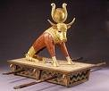

이스라엘 민족
신명기 전반에 걸쳐, 하나님은 그의 백성이 아브라함에게 약속하신 땅, 가나안에 도착했을 때 어떻게 살아야 하는지에 대한 자세한 지침을 주셨습니다. 이러한 지침에는 그들이 형성해야 할 정부의 종류도 포함되어 있었습니다. 처음에는 일련의 판사들에 의해 통치될 것이며(그래서 판사기라는 이름이 붙었습니다). 그리고 신명기 17장 14-15절에서 하나님은 이스라엘 백성에게 왕들이 백성을 통치해야 하지만, 오직 하나님께서 특별히 선택한(기름 부음 받은) 왕만이 통치해야 한다고 말씀하셨습니다.
이스라엘의 첫 번째 왕인 사울은 하나님에 의해 임명되었지만, 그는 궁극적으로 불순종하고 믿음이 크게 부족했습니다. 하나님은 사울의 후손을 통해 이스라엘을 계속 통치하지 않기로 하셨습니다. (사울의 아들은 그 뒤를 이어 왕이 되지 않았습니다.)
이 소책자의 첫 번째 부분에서 보았듯이, 성경의 여러 책들은 그들이 대표하는 문학 장르(문체)에 따라 그룹화될 수 있습니다. 첫 여덟 권인 창세기부터 룻기까지는 초기 역사의 사건들을 시간 순서에 따라 연대기적으로 서술하고 있습니다. 이스라엘 민족의 이야기는 구약의 여러 책에서 다루어지지만, 시간 순서대로는 아닙니다. 누가 언제 어떤 일이 있었는지를 더 잘 이해하기 위해 사건이 전개된 시간표와 구약 성경에서 그 이야기들을 찾을 수 있는 참고서를 찾아보는 것이 유익합니다(많은 성경에 그런 참고서가 있습니다). 다음은 이스라엘을 통치한 왕들의 간략한 목록과 그들의 이야기를 구약 성경에서 찾을 수 있는 위치입니다:
다윗 왕
이스라엘의 다음 왕이자 가장 위대한 왕이 될 인물은 예상치 못한 곳에서 등장했습니다. 다윗은 베들레헴이라는 (들어본 적 있죠?) 외딴 마을에 살던 한 사람의 막내 아들로 태어났습니다(전통적으로는 장남이었지만). 바로 다윗의 계보를 통해 예수님이 태어나실 것입니다!
하나님께서 그분의 뜻을 이 세상에서 이루기 위해 선택한 많은 인물들처럼, 다윗도 완벽하지는 않았습니다. 그는 왕으로서 큰 죄를 저지르기도 했지만, 사무엘상 13장 14절에서 하나님은 선지자 사무엘에게 다윗이 하나님의 마음에 합한 사람이라고 말씀하십니다.
불순종한 민족
다윗의 아들 솔로몬이 그의 뒤를 이어 왕이 되었습니다. 솔로몬은 매우 학식이 풍부하고 지혜로운 왕으로 잘 알려져 있습니다. 그는 아버지 다윗이 처음 구상한 화려한 성전을 완공하도록 이끈 왕이기도 합니다. 솔로몬은 "아가서" (사랑 시!)와 "전도서" 두 권의 구약 성경을 저술한 것으로 알려져 있습니다.
하나님이 백성에게 주신 첫 번째이자 가장 중요한 명령은 다른 신들을 두지 말라는 것이었습니다. 하지만 불행히도 이스라엘은 다양한 신과 우상을 숭배하는 부족과 민족들로 둘러싸여 있었습니다. 솔로몬은 성전을 짓기 위해 외국인들을 이스라엘로 데려왔고, 그들과 함께 우상도 들어오게 되었습니다. 우리 각자의 삶에서도 알 수 있듯, 자신과 다른 신념을 가진 사람들과 항상 함께하는 것은 쉽지 않으며, 우리의 신앙이 약해질 경우 그들의 신념이나 관습을 받아들이기 시작할 수 있습니다. 바로 이것이 이스라엘에 일어난 일이었습니다.
솔로몬은 여러 면에서 위대한 왕이었지만, 그의 통치는 종종 가혹했습니다. 그는 성전 건축과 자신을 위한 호화로운 궁전을 짓기 위해 백성들에게 무거운 세금을 부과했습니다. 이로 인해 이스라엘은 남쪽의 유다와 북쪽의 이스라엘 두 개의 왕국으로 나뉘게 되었습니다.

하나님은 선지자들을 통해 경고하십니다
이스라엘 민족은 하나님에 의해 선택된 하나님의 백성입니다(신명기 7:7-9). 그러나 유대인들은 여러 번 주변 민족들이 숭배하는 우상으로 돌아섰습니다. 이러한 우상 숭배에는 유아 희생과 성적 부도덕 같은 하나님이 결코 용납할 수 없는 행위가 포함되어 있었습니다.
하나님은 끊임없이 백성에게 선지자들을 보내 그들의 불순종에 대한 심각한 걀과를 초래할 것이라고 경고하셨습니다. 구약 성경의 마지막 부분은 하나님이 선지자들에게 말씀하도록 영감을 주신 내용을 담고 있습니다. 하나님이 선지자들을 통해 이스라엘의 패배와 포로에 대한 예언을 하신 모든 일들이 이루어졌습니다.
선지자들의 저술 순서를 살펴보면, 이스라엘 왕들과 유사한 차트를 만들 수 있습니다. 사무엘상과 사무엘하, 열왕기상과 열왕기하, 역대상과 역대하에 기록된 사건들은 선지자들이 이스라엘 백성에게 경고하려 했던 사건들이었습니다.
패배한 민족
이스라엘 백성은 약 50년간의 포로 생활을 마치고 고향으로 돌아갈 수 있었지만, 돌아간 이들은 유대인들의 남은 무리일 뿐이었습니다. 이스라엘의 영광의 시대는 끝났고, 성전은 약탈당하고 파괴되었습니다. 그들은 더 이상 스스로를 다스릴 수 없게 되었으며, 1948년 제2차 세계대전 이후 새로 형성된 이스라엘 국가가 세워질 때까지 그들의 땅은 여러 제국의 지배를 받게 되었습니다.

구약 성경의 마지막 세 권인 학개, 스가랴, 말라기는 유대인들이 포로에서 돌아온 뒤 하나님에 대한 믿음을 회복하고 그를 향한 경배를 다시 정직하게 하도록 격려하기 위해 쓰여졌습니다.
여러 차례의 실패를 겪은 후, 그들은 새로운 성전을 짓는 데 성공했습니다. 비록 그것이 솔로몬 왕 때 세운 이전의 영광스러운 성전의 그림자에 불과했지만, 그들의 고향에서 다시 한 번 유일한 참 하나님을 예배할 수 있는 장소가 되었습니다.
그리고 선지자들이 이스라엘의 몰락을 예언할 때, 그들의 예언은 하나님과 그분의 백성 사이에 새로운 언약을 맺을 구세주, 즉 메시아에 관한 예언과 함께 이루어졌습니다(이사야 53, 55장).
하나님은 패배한 백성에게 가장 암담해 보일 때조차도 미래가 여전히 그분의 손에 있으며, 여전히 인류, 즉 그분의 최고의 창조물과의 관계를 갈망하고 있음을 믿으라고 요청하셨습니다.

예수님 이전과 이후의 시간
역사는 두 가지로 나눠집니다: 예수님이 태어나기 전과 태어난 후입니다. 우리가 사용하는 달력 연도는 예수님이 태어난 이후의 시간을 기준으로 합니다.
구약과 그 이전의 날짜는 "B.C."라는 표기로 표시합니다. 이는 "Before Christ"의 약자입니다. 예수님이 태어난 이후의 날짜는 "A.D."로 표기되며, 이는 라틴어 "Anno Domini"의 약자로 "우리 주님의 해"라는 뜻입니다.
예수님을 메시아이자 하나님의 아들로 믿지 않는 일부 사람들은 날짜 체계에서 예수님을 제거하고 싶어 합니다. 그래서 그들은 "B.C.E."라는 표기를 사용하기 시작했으며, 이는 "Before the Common Era"의 약자입니다. 하지만 "공통 시대"는 예수님의 지상 생활을 기준으로 정의되기 때문에 결국 같은 의미입니다. 다시 말해, 역사는 두 부분으로 나뉜다고 할 수 있습니다: 예수님이 태어나기 전과 태어난 후입니다.

포로 시기 이후의 유대교 (하나님 숭배)
유대인들의 예배는 주로 하나님께 죄 사함을 받기 위해 동물 희생 제물을 드리는 방식으로 이루어졌습니다. 하나님이 아담과 이브에게 그들의 죄로 인해 죽어야 한다고 말씀하신 것을 기억하시나요? 유대인들에게 하나님이 지시한 대로 동물을 희생하는 것은 그들의 죄를 위해 생명을 바친다는 상징적인 의미가 있었습니다.
유대인들이 포로에서 돌아온 후, 선지자들이 그들에게 하나님을 예배하고 모든 계명을 다시 지키기 시작하도록 격려했습니다.
옛 언약 아래에서 하나님은 자신의 계명을 지키는 자들에게 건강과 번영을 약속하셨습니다. 이스라엘 민족은 하나님을 신뢰할 때 강력하고 부유해졌습니다. 하지만 이스라엘로 돌아온 유대인들이 깨닫지 못했던 것은, 이스라엘의 몰락과 함께 옛 언약이 더 이상 유효하지 않다는 점이었습니다.
구약의 위대한 남성과 여성들
우리는 짧은 시간에 많은 이야기를 다뤘지만, 성경은 하나님의 위대한 남성과 여성들의 이야기로 가득 차 있습니다. 그들을 알아가는 것은 정말 중요합니다! 다음은 여러분이 시작할 수 있는 목록입니다. 성경을 읽기 시작하면 이 목록에 추가할 많은 인물들을 발견하게 될 것입니다. 다음 인물들부터 시작해 보세요. 시간이 지나면서 더 많은 내용을 읽게 되면 "성경의 위대한 인물들"이라는 나만의 목록을 만들 수 있을 것입니다. 발견한 장과 절도 꼭 기록해 두세요. 그러면 필요할 때 언제든지 쉽게 찾아볼 수 있습니다!
시작해 보세요!
더 나아가기 전에, 지금까지 언급된 구절들 중 몇 가지를 찾아보는 것이 좋겠습니다. "장과 절" 참조를 찾아보는 연습을 하기에는 좋은 기회가 될 것입니다.